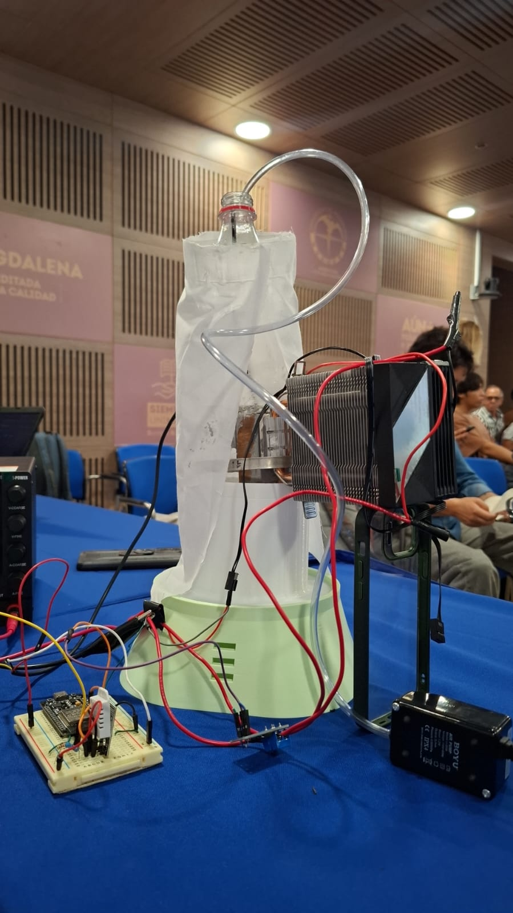

Espeletia occulta
Estrategias evolutivas de termorregulación pasiva en los páramos de la Sierra Nevada de Santa Marta

Manto Marcescente (Necromasa Aislante)
Las hojas secas permanecen adheridas al tallo formando una camisa cilíndrica de microcapas de aire estancado que aísla los tejidos vasculares de oscilaciones extremas.
Pubescencia Reflectiva (Indumento de Alto Albedo)
Densa capa de vellosidades epidérmicas blanquecinas que refleja la sobre-irradiancia solar y ultravioleta, evitando el recalentamiento tisular.
Nictinastia (Movimiento Foliar Circadiano)
La roseta foliar se pliega dinámicamente durante la noche, cerrándose sobre la yema apical (meristemo/médula) para impedir el congelamiento nocturno.
Construcción y Montaje DIY
Soluciones ingeniosas de bajo costo para el acoplamiento mecánico y térmico

1. Cuerpo del Reactor & Aireador
Adaptación de botella PET con sonda DS18B20 sumergida y manguera de burbujeo constante para mezcla térmica homogénea.
.jpeg)
2. Acoplamiento de Presión
Uso de abrazadera de manguera (zuncho) para deformar el plástico cilíndrico contra la placa plana, forzando el área de contacto.

3. Ensamble Final de Torre
Integración del CPU Cooler KF200-DGT con heatpipes de cobre, pasta térmica siliconada y electrónica de control cableada.
Plataforma IoT & Dashboard Web
Arquitectura desacoplada en tres capas para supervisión y control en tiempo real

Microcontrolador ESP32 (C++)
Lectura de sensores OneWire con librería DallasTemperature, modulación PWM en D25 mediante periférico LEDC y control servo en D27.
API Flask & Motor de Control (Python)
Hilo serial asíncrono a 115200 baud, cálculo del lazo PI con anti-windup digital, ajuste FOPDT mediante `scipy.optimize.curve_fit` y API REST.
Dashboard Web (Astro + ECharts)
Gráficas dinámicas escalables en tiempo real, monitoreo de corriente estimada, visualización de estado de la prueba y control manual.